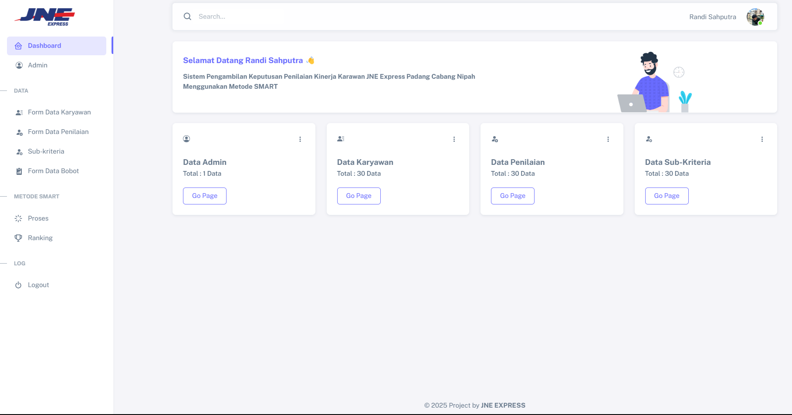

creating a system for evaluating the best employees using the saw methodd
namely the creation of the best employee decision support system at JNE EXPRESS PADANG BRANCH using the website-based SAW method.

This system is designed to help companies in selecting the best employees using the website, and also makes it easier for companies to carry out assessments that are useful for smooth development in the future.
Decision Support System (DSS) is a tool that helps decision making based on available data and relevant methods. In the world of work, DSS can be used to assess and determine the best employees based on predetermined criteria. One method that is often used is Simple Additive Weighting (SAW), where the decision to select the best employees at JNE EXPRESS uses the SAW method based on its criteria
#2. evelopment of a system for the best employee assessment from using the saw method to the smart method
Temporibus ad error suscipit exercitationem hic molestiae totam obcaecati rerum, eius aut, in. Exercitationem atque quidem tempora maiores ex architecto voluptatum aut officia doloremque. Error dolore voluptas, omnis molestias odio dignissimos culpa ex earum nisi consequatur quos odit quasi repellat qui officiis reiciendis incidunt hic non? Debitis commodi aut, adipisci.

Decision Support System (DSS) is an important tool that helps decision making based on available data. One method that is often used is the SMART (Simple Multi-Attribute Rating Technique) method. This method is very suitable to help companies determine the best employees by considering various relevant criteria. ..
The smart method used to develop the existing system previously used the SAW method, and now the smart method is the choice for system updates at JNE which is useful for conducting employee assessments quickly and more innovatively and efficiently..

Randi Sahputra
The journey to the goal may be difficult, but every small step is a victory to be celebrated. Don't forget the ground that you step on every day and never feel like a failure.